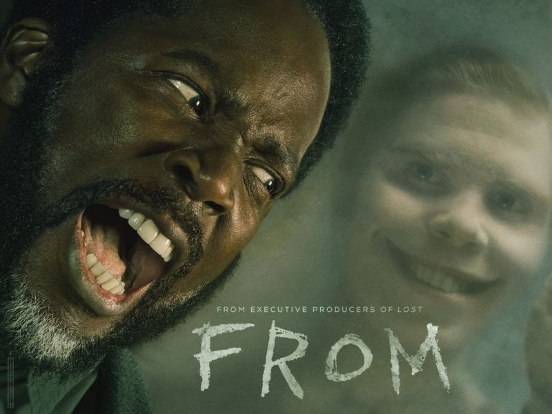
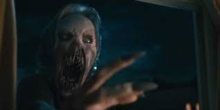

From (stylized in all capitals as FROM) is an American science fiction horror television series created by John Griffin. The first season premiered on February 20, 2022, on Epix. The series stars Harold Perrineau, Catalina Sandino Moreno, Eion Bailey, David Alpay, Elizabeth Saunders, Scott McCord, and Ricky He in main roles.
The series is set in a nightmarish town in the United States that traps those who enter. The unwilling residents strive to stay alive while plagued by terrifying nocturnal creatures from the surrounding forest as they search for secrets hidden within the town and beyond in the hope of finding a way out. The series centers around Boyd Stevens (Perrineau), the self-appointed sheriff and de-facto mayor, and the Matthews family, new arrivals to the town who soon discover that they are trapped along with the other existing residents, and must work together to stay alive and find a way to escape.
At first, it seemed like the town in From was besieged by vampires. In addition to being nocturnal and asking victims' permission to enter their homes, the monsters appeared to be human — until they shed their conventional visages to attack. Moreover, Victor (Scott McCord), the town's most mysterious resident, discovers that the monsters sleep in dungeons far below the town. While the tunnels hold more mysteries than answers, the subterranean passages reveal that the monsters also draw glyphs and symbols. Unlike vampires, however, From's monsters kill for sport — not sustenance
Escaping the mysterious location in From is quite complicated since those who try to flee either get lost or wind up back in the center of the town. The fact that it is set in the middle of nowhere also makes things uncomfortable. Things worsen at night as dangerous humanoids and monstrous creatures hunt down those who try to escape or don't make it inside their respective shelters. The only way to evade these creatures is to get inside houses or shelters that have a special talisman with mysterious engravings on it.However, once allowed inside the house, these monsters can shapeshift into someone familiar to the residents and kill their unsuspecting victims.
Season 2 begins with Boyd, Victor, and Tabitha trapped outside as the monsters begin their hunt. Meanwhile, a bus filled with passengers enters the town and ends up trapped inside it. Desperate to save Tabitha from the underground bunker, Jim tries his best to do so, but the house collapses in on him, though he survives. Kristi also reunites with her fiance, Marielle (Kaelen Ohm), who is a passenger on the bus. Some of the passengers try to escape the town, but the monsters kill them. The others, including Marielle and a disgruntled guy named Randall, stay with the other citizens. Tabitha reunites with her family while Boyd catches up with his estranged son, Ellis. Meanwhile, Kenny later finds Sara in the church's basement. Boyd tells Kenny that Father Khatri believes that Sara is the key to their freedom, noting that she could be connected to the complexities of the town.
The Season 3 finale of From tied up some loose ends but left more questions unanswered. Fatima was not pregnant but birthing a smiling monster that was killed in Season 2. Tabitha and Jade refused to sacrifice their children and are cursed to return to Fromville and forget.25 Nov 2024